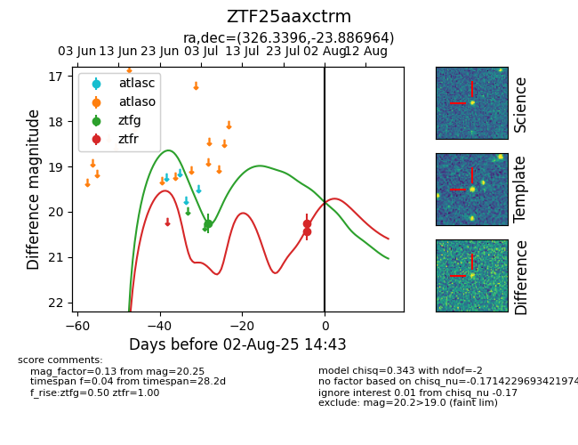

Target ZTF25aaxctrm at 2025-08-02 14:43, see:
FINK: fink-portal.org/ZTF25aaxctrm
Lasair: lasair-ztf.lsst.ac.uk/objects/ZTF25aaxctrm
ALeRCE: alerce.online/object/ZTF25aaxctrm
alt names
ZTF25aaxctrm (ztf,fink)
coordinates:
equatorial (ra, dec) = (326.3396,-23.88696)
galactic (l, b) = (26.6105,-48.12402)
photometry
last ztfg=20.26, ztfr=20.25
1 ztfg, 2 ztfr detections
